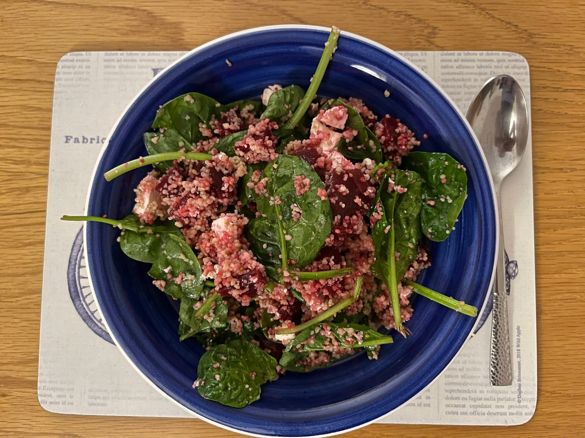

Beetroot feta salad
Mmmmm...

Ingredients
Salad
- 200g baby spinach leaves
- 500g cooked beetroot
- Feta cheese to taste
- Handful/bunch of mint
- Couscous or grain of choice (enough for 4)
Dressing
- 5 Tbsp olive oil
- 5 Tbsp lemon juice (1 lemon)
- 1-2 Tbsp of honey
- 1 Tbsp wholegrain mustard
Instructions
- Cook your grain as required.
- Mix the salad ingredients together, including the grain once cooked.
- In a separate bowl, mix the dressing ingredients together, then add to the salad and mix.
Serves 4.
Inspired by this
recipe.